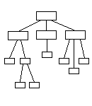

Általában a hierarchikus felépítés jellemzõ: (lásd www.hudir.hu ), de egymástól távol esõ oldalakat is összekapcsolhatunk, ha logikailag összetartoznak

Rendezett file-tárolás
Minden anyag a neki megfelelõ alkönyvtárban
legyen. jó alkönyvtárszerkezet
jó alkönyvtárszerkezet  könnyû
módosíthatóság
könnyû
módosíthatóság
(Ha az elején minden file ömlesztve egy alkönyvtárban van,
akkor késõbb szinte reménytelen szétválogatni, mivel a
linkeket is át kell írni.)
Egyéb tippek:
- helyesírási hibák, nehezen érthetõ mondatok, egyéb tévedések kijavítása
- ne dicsérd a saját siteodat
 ha jó úgyis látszik
ha jó úgyis látszik